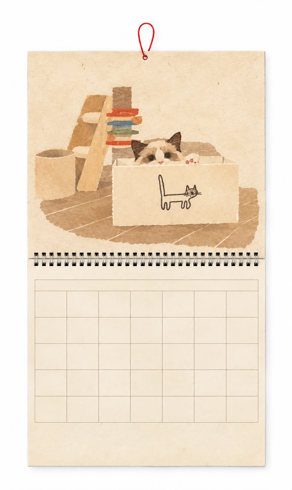

← HOME
←
→

일
월
화
수
목
금
토
이번 달 달력 저장
기록 편집
← 달력
← 이전 날
다음 날 →
×
날짜 기록
+ 새 기록
날짜
제목 · 선택
글
글꼴
English · Agdasima
한국어 · Nanum Barunpen
中文 · 寒蝉活仿宋
크기
자동
16 px
19 px
23 px
28 px
색상
미리보기
여기에 적어 주세요…
사진 · 최대 4장
기존 사진 삭제
기록 저장
저장된 날짜